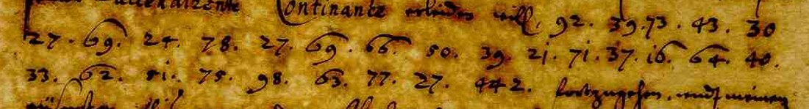
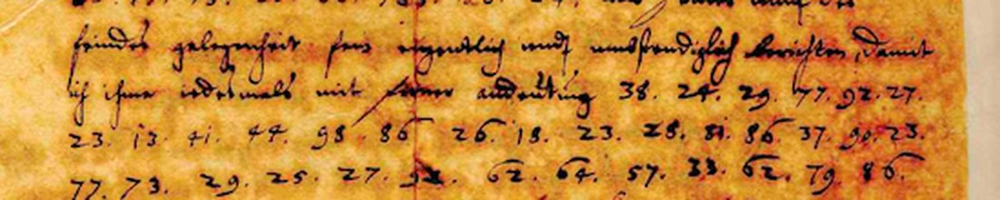

01 The document
The heading reads Copia Intercipirtes Schreibens General Baners an General Major Stallhausen: Stålhandske, who commanded the Swedish troops in Silesia. The letter is dated Hoff den 29 Decem. A. 1640 and signed with a flourished B. Kircher’s file calls it Copia litterarum interceptarum Generalis Baners Hoff in Silesia. The copy reached Rome, presumably so that Kircher could try the cipher; there is no decipherment on the two pages posted.

The cipher passages (S1–S7 here) hold 274 two-digit numbers with 74 distinct values from 2 to 98, and fourteen three-digit numbers: 361, 442, 464, 508, 513 and 568, which stand for names or nouns, and a cluster 766–783 in the fifth and sixth passages. The work started from Neal’s transcription and the blog’s small images; it was then checked figure by figure against the Museo Galileo’s scans of f. 239r–v (1469 × 2304 px, served openly), which correct four figures: the first figure of S4 is 86 (Neal 66), a figure in Schlesien is 86 (Neal 36), one in guten is 47 (Neal 57), and the figure Neal could not read in S7 is 92.
02 How it was broken
The Swedish keys. DECODE holds the Riksarkivet’s box of Swedish chancery keys (Chifferklaver, låda II, records R4103–R4329). Their archivists’ covers name the correspondents and give the values of a. Banér’s keys there, the Horn–Banér cipher (R4122), the code in use with Oxenstierna from late 1634 (R4123, copied in R4325 as Generalis Campi Marschalli Johan Banneris Cyffer), and the other alphabets of the 1640 chancery register (R4325, R4266), were transcribed and tried, as they stand and at every offset from −30 to +30. None fits.
Why a solver alone fails. Unconstrained homophonic annealing finds keys that score better than real German would. A control settled this: 1630s German from the Theatrum Europaeum, cut to the same segment lengths and enciphered with Banér’s 1634 key, scores −279 under the model built here (de-1640s), and the solver’s optima sit at −390 to −430. With eight known values the same solver, restricted to a few homophones per letter, lands on the true key. So the letter needed cribs.
The cribs. The sixth passage follows mich aber von zeit zu zeit and opens 40 16 23 28 29: durch. The pair 28 29 (ch) comes seven times. 16 64 40 is und. With those fixed, the solver wrote nach der … pfaltz und in the third passage, the one that ends [442] loszugehen. Banér did march from Hof into the Upper Palatinate in the first days of January 1641, and surprised the Reichstag at Regensburg:

That phrase fixes twenty values, each consistent with durch and und. From there the key was extended word by word, and no value was kept unless it read in at least two words: Schlesien agirende, dazu ziehen, gute acht geben, sobaldt, ehender, solche, Fürsichtigkeit nachvolgen, wohin er seine Marche zu richten, entgegen. The key has 70 values, one to six per letter, in no alphabetical or banded order.
03 The reading
Clear text in roman, the deciphered passages in italics, code words in brackets, unread letters as ?. The transcription of the clear text is Neal’s.
… welches ich im Duplo, als ein Exemplar Jobs[508], das andere aber in [513] n Johann ??????????? über [568] abgehen lassen …
… undt gesonnen, wofern es nimmer die Ratio Belli undt des feinds … Continance erleiden will, nach der Oberpfaltz und gegen die [442] loszugehen, undt meinen aeussersten fleis anzuwenden. … es werde der feindt seine aeusserste macht von allen oertern her colligiren, undt so starck als es ihm muglig mir entgegen leitten, etwa auch die in Schlesien agirende [361] dazu ziehen.
So wollt der herr General Major darau[f] gute acht geben und sobaldt (e)ich sein gegen[773] ehender [464] auf solche W?????????????? zu [775] dem [767] ?? ein guten Fürsichtigkeit nachvolgen, mich aber von zeit zu zeit durch E(sp)ionen sie ko[m]en, dass sie mö[g]en, wie sein undt des feindes gelegenheit sey, eigentlich undt unschwierig berichten, damit ich ihm inmittelst mit seiner andeutung wohin er seine(n) Marche zu richte(n), entgegen wolten komme …
In sense. Banér sent his letter of the 16th from Erfurt in duplicate, one copy by [508], the other by a Johann by way of [568]. He has come to Hof and means, if the reason of war and the enemy’s bearing allow, to march through the Upper Palatinate and against [442], most likely Regensburg or the Bavarians. He expects the enemy to gather every force against him, “and perhaps also draw in the [troops] acting in Silesia”. Stålhandske is therefore to keep good watch, and as soon as the enemy moves off, to follow with good caution. He is to report from time to time through spies on his own and the enemy’s situation, so that Banér, told where he means to direct his march, can come to meet him.

04 What stays open
- The second courier’s name (S2, eleven tokens after Johann, which decipher as ohrs?acbuet). The figures are confirmed on the manuscript and all but one value is fixed by other words, so the copy itself is corrupt here. The first courier reads Jobs[508], Jobst and a surname in code (graded M).
- A stretch of the fifth passage (eisen o vi rechte, fourteen tokens), two tokens before ein guten, and a stray e in sobaldt e ich (probably er sich). The manuscript confirms every figure and every value is fixed by other words, so this copy, the only one known, is corrupt here; the sent original or a Swedish register copy would be needed.
- Slips of the copy (graded C): d e i n for die in; 93 (i) for n in Schlesien; one letter missing from Marche and one from Espionen.
- The fourteen code words. 442 is what Banér marches against; 361 is the force acting in Silesia; 508 and 568 are how the two copies went. The 7xx codes fall where letters are missing (darau[778] for darauff, au[772] for auss, ko[770]en), and five of them are letters: freed of fixed values, the solver itself returns au[772] solche [766]eise = auf solche Weise, and darau[778] = darauf, ko[770]en = kommen, dass sie mo[783]en = dass sie mögen (graded C). The other nine (361, 442, 464, 508, 513, 568, 767, 773, 775) stay open: no key survives and each occurs once.
The copy is the only witness known. The sent original, or a register copy in Banér’s papers in Stockholm, would settle the corrupt stretches; neither is digitised.
05 Sources
- Klaus Schmeh, “An unsolved encrypted letter from the 17th century”, Cipherbrain, 2 June 2019, with Philip Neal’s transcription and readers’ comments: scienceblogs.de.
- Archivio della Pontificia Università Gregoriana, APUG 568 f. 239r–v (Kircher correspondence); images: 239r, 239v (Athanasius Kircher Correspondence Project, Museo Galileo).
- Riksarkivet, Chifferklaver låda II, on DECODE: R4122 (Horn–Banér), R4123 (J. Banér, from 1634), R4325 (chancery register 1640), R4266 (1640); tried, none fits.
- Language model: Deutsches Textarchiv, Theatrum Europaeum I (1635), Olearius (1647), Grimmelshausen (1669), with the DTA prints of 1470–1609.
{kind=link}
{kind=link}
Files: baner1640/: ct_neal.txt (ciphertext), key.json, decode.py (reading and measurement), reading.md, solve3.py (annealer), NOTES.md.